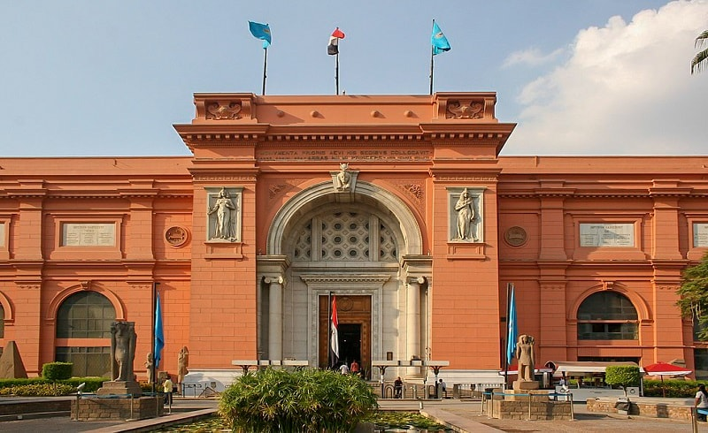

museums
Cairo has a lot of tourist attractions, among which are the various museums

the egyption museum
The Coptic Museum
.jpg)
Cairo has a lot of tourist attractions, among which are the various museums
Cairo has many religious buildings like Amr ibn al-Aas MosqueTheHanging Church and Ahmed Ibn Tulun Mosque
Cairo has many beautiful gardens like Liberty Park,El-Fustat Park and International Park
"City Stars" in Nasr City, where you can buy goods from the most famous local and international brands through a large number of shops including the mall with its five floors, as well as eating the most delicious meals

One of the most important tourist destinations in Cairo is by Arab and foreign tourists and even local people. It is a popular market dating back to 6 centuries and is located near the Al Hussein neighborhood.
One of the newest and largest and most beautiful shopping malls that you should not miss during the tourism in Cairo, besides the various shops that provide all the services that the shopper may need